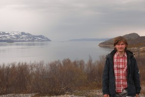
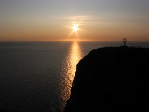
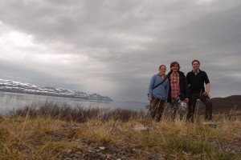

Radau Nordkape internetą ir porą žmonių, kurie mane nupaveikslavo.

{kind=link}
200km iki Nordkapo
Trumpai:
- radau internetą Nordkape (čia yra visas hall – pramogų centras, bet smagus).
- vakar naktį putė smarkus vėjas (kokį man yra tekę matyti – smarkiausias), o gūsiai išvis pirmą kartą gyvenime. Miegojau palapinėje. Statyti patiko, griauti – dar labiau (užtrukau pusvalandį griaudamas, papasakosiu grįžęs)
- Incidentas su šios įstaigos didžiausiąja valdžia – dėl bilieto ir nakvynės
- aš vėl sveikas. Bet kažin ar maudysiuos arkties vandenyne

Šiaip aplink mane nemažai sniego; vėjas žvėriškas, temp. apie 0 (kai vaikščiojau gavau krušos), miegosiu šiąnakt slėnyje prie pat Nordkapo. Ten visai kita situacija. Gražu, ramu. Tik nueiti pavojinga – 400m leidimosi akmenimis.
Taigi tikslas pasiektas. Ar džiaugiuosi? LABAI.
Šiaip maždaug toks vaizdas, tik nėra saulės:

{kind=link}
Vaizdas panašus, tik nėra saulės.
O čia vokiečiai, kurie mane vežė ir fotografavo. Labai mieli. Vyras – inžinierius firmoje, kuri gamina saulės baterijas, o dukra – PhD studentė „landscape planning“.

{kind=link}
Galbūt su jais pavažiuosime per Norvegiją. Jei rytoj susitiksiu.
Sveikas, tikslas pasiektas, beliko „tūsas“ – atostogos.
Atrodai pavargęs.
O inkstų tu ten neperšalsi?
0 laispnių ir miegi palapinėje :/
Ten buvo ~para nevalgyta Dabar užkandęs jaučiuos.
Dabar užkandęs jaučiuos.
Viskas tvarkoj.
Dabar džiaugiuos, galvoju apie istoriją, filosifoją ir programavimą
Super. Džiaugiuos už tave
Mo,
neįsivaizduoji, kaip pašokau iš laimės, kai pamačiau, kad tavo blog’e atsirado įrašas .)))
nuostabūs vaizdai ir geri žmonės supa tave,)
džiugt džiugt,)
O zn, tau lb tinka barzdele =) ir seip labai deriniesi prie to viso grozio tau uz nugaros… matosi, kad zmogus savo stichijoj isivaiduoju, koki neapsakoma dziaugsma patyrei
isivaiduoju, koki neapsakoma dziaugsma patyrei  tikiuosi “tusintis” trauksi labiau i pietus, kur ne 0 laipsniu… dziugu kad bent tokius trumpucius yrasus ikeli. Kai grysi, lauksim knygos
tikiuosi “tusintis” trauksi labiau i pietus, kur ne 0 laipsniu… dziugu kad bent tokius trumpucius yrasus ikeli. Kai grysi, lauksim knygos 
Congratz!
Tikiuosi metei mintį neberašyti blogo? ,D Siūlau tiesiog neit į kraštutinumus – iki šiol rašei daug ir išsamiai, tai žinoma kad atimdavo laiko.
labai kietai, kelio zmogau motiejau.
ir nepaliauk rasyt, vykis hesse.
Na, ir nuvylei chia visą būrį (šaiką) savo fanų, pranešęs, kad tęsinys neaišku kada pamatys dienos šviesą, nors saulė pas tave ten 24 val. kybo gorizonte. Ajazaw. Mes ir draugus visus susikviečiam jau porą kartų į savaitę į vakarėlius pasisėdėjimams prie laptopėlio (Mo šlauninuko), kad visi linksmai kartu pasiskaitytume Mo kelionės nuotykius į norvegų šaldytuvą, nekantriai laukdami naujų įrašų ir tęsinuko kaip laukia solidžios namų šeimininkės muilo operų serialo. Kai susirinkę pasiskaitom naujausius Mo kelionių nuotykius, pradedam triukšmingas diskusijas net iki išnaktų apie kelionės įspūdžius ir kaip tau ten geriau reikėjo keblesnėj situacijoje pasielgti. Diskusijos užverda karštos (kai kas po jų strimugalviais net išlekia namo lyg kypiatoko būt ašparintas, kai žvilgteli į laikrodį, kad nuo namiškių negaut bizūno ir pylos).
Tai kū daba mums čia visiems jauniems naturalistams ir keliautojams daryti, jei tęsinio nebus be liepos vidurio? Tu mus visus į neviltį varai ir užspeist bandai į kampą. Mes laukiam tęsinio, kad galėtume plėtot karštas diskusijas ir aptarimus Mo kelionės nuotykių…
Gal mes atrodom iš šalies ir egoistais ir savanaudžiais, kad Mo chia baisiai spaudžiam, bet ką darysi – krizė palietė ir mus, padariusi labai viskam reiklius, o tu pabėgai gi nuo jos, palikęs mus chia vienus prie rankraščių nebaigtų. Negražu. Turėtų būti gėda. Norim tęsinio, kad pasvarstyt, padiskutuot tarpusavy ar tikrai pigi arbata kelte už 6 jevriukus…
Pagarbai, jaunų keliautojų būrelis “Kentukai”
Puiki fantazija, Kentukai. Įdomu kas būsi – šiek tiek primeni Donelaitį savo iškalba.
Supranti, kai prisėdu prie kompo, tai norisi ir wordpress’ą, ir javascript’ą pakrapštyt. O kai keturias dienas aprašyti užtrunka penkias valandas, tai nelabai kam lieka kitkam laiko.
Kai važiusiu į Aziją („biednesnes“ šalis), įrašai, tikiuosi, bus kaip pradžioj. Nes ten tiesiog lengva pasiimti nakčiai kambarį už du dolerius.
Tame ir problema: jei kas trečią dieną turėčiau po naktį kur nors viešbutuky arba hosteliuky, tai viskas būtų ore.
Bet kai internetas kur papuola…
O kad dabar turėčiau fotiką. Rojaus kampely darausi kakavą, prie didelės švarios upės ir snieguotų viršūnių.
Be kita ko, už poros šimtų metrų kempingas (deja, man per brangus), tai dar pasigavau jo bevielį. Ir džiuginu save, jus, ir savo skreitinuko bateriją.
Labanakt, liaudie, ir sudiev.
Ačiū už smagius komentarus, labai įdomu skaityti